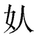
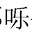
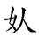

心异兄：
来信并该旬刊三期，均经敝座陆续“查照收取”，特此照会，以见敝座谢谢之意焉。
且夫“孥孥阿文”[521]，确尚无偷文如欧阳公之恶德，而文章亦较为能做做者也。然而敝座之所以恶之者，因其用一女人之名，以细如蚊虫之字，写信给我，[522]被我察出为阿文手笔，则又有一人扮作该女人之弟来访，以证明实有其

[523]。然则亦大有数人“狼狈而为其奸”之概矣。总之此辈之于著作，大抵意在胡乱闹闹，无诚实之意，故我在《莽原》已张起电气网，与欧阳公归入一类也耳矣。其实也，S妹似乎不会做文章者也。其曰S妹之文章者，盖即欧阳公之代笔焉耳。他于《莽原》，也曾以化名“捏蚊”者来捣乱，厥后此名亦见于《妇周刊》[524]焉。《民众》[525]误收之聂文，亦此人也。捏蚊聂文，即雪纹耳，岂不可恶也哉！
《甲寅》周刊已出，广告上大用“吴老头子”及“世”之名以冀多卖，可怜也哉。[526]闻“孤松”[527]公之文大可笑。然则文言大将，盖非白话邪宗之敌矣。此辈已经不值驳诘，白话之前途，只在多出作品，使内容日见充实而已，不知吾兄以为然耶否耶？否耶然耶欤乎？
迅顿首 七月廿日
注 释
[521] “孥孥阿文” 指沈从文。他在《国语周刊》第五期（1925年7月12日）发表的《乡间的夏》一诗中有“耶耶

——孥孥唉”的句子。[522] 鲁迅1925年4月30日日记：“得丁玲信。”鲁迅疑为沈从文化名来信。
[523]

鲁迅戏造的字，强调其为女性。[524] 《妇周刊》 即《妇女周刊》。《京报》附刊之一，北京女子师范大学蔷薇社编辑。1924年12月10日创刊，至次年11月25日共发行五十期，1925年12月20日出版纪念特刊后停刊。该刊第二十五号刊载了署名捏蚊的《读陈剑非君〈妇女职业问题的由来及其重要〉的感言》一文。
[525] 《民众》 即《民众文艺》。该刊第二十五号（1925年6月23日）载有聂文的《今后所望于民众者》一文。
[526] 《甲寅》周刊 章士钊曾于1914年5月在日本东京创办《甲寅》月刊，两年后停刊。1925年7月在北京复刊，改为周刊。“吴老头子”，指吴稚晖；“世”，指蔡元培。7月18日《京报》刊出的《甲寅周刊》出版广告的目录中，列有蔡元培的《教育问题》、吴稚晖的《怪事》等文。
[527] “孤松” 当为“孤桐”，指章士钊（1881—1973），字行严，笔名孤桐，湖南善化（今长沙）人。早年参加反清活动，“五四”时期反对新文化运动。1924年至1926年间任北洋政府教育总长。按“孤松”是李大钊在1918年至1922年间曾用的笔名。